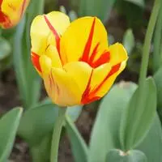

 原始图像
blur(4px)
brightness(250%)
contrast(180%)
grayscale(100%)
hue-rotate(180deg)
invert(100%)
opacity(50%)
saturate(7)
sepia(100%)
drop-shadow(8px 8px 10px green)
sepia(90%) saturate(400%) brightness(150%)
说起滤镜可能大家首先想到的就是 PhotoShop 之类的制图软件，通过此类软件的滤镜可以对图片进行美化。而在 CSS 中，我们无需借助任何软件也可以实现很多种滤镜效果，例如模糊效果、透明效果、色彩反差调整、色彩反相等等。另外，通过 CSS 中的滤镜还能对网页中的元素或者视频进行处理。
wait for response